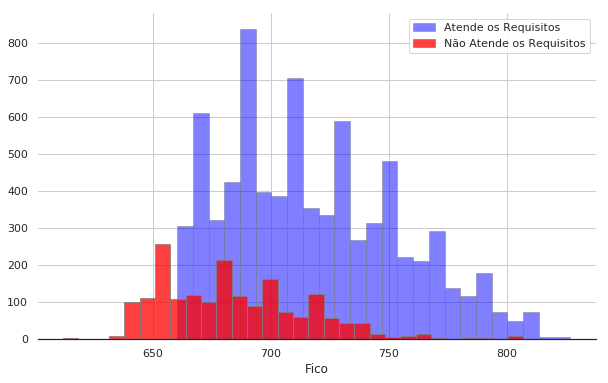
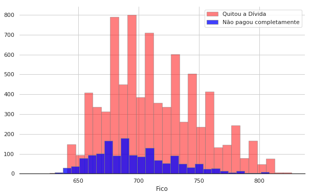
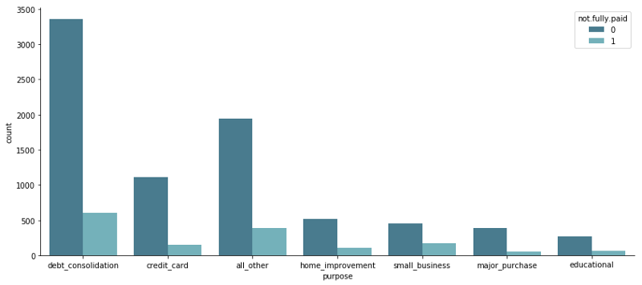
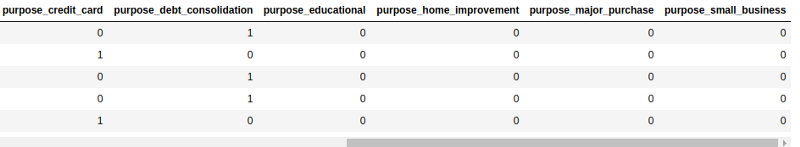
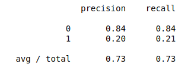
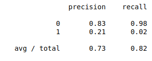

Analisando dados de empréstimo
Como de costume, faremos uma análise, algumas visualizações para entender nossos dados e depois utilizaremos nosso modelo de Machine Learning. Nossos dados dessa vez vêm de uma plataforma chamada Lending Club que disponibiliza os dados no seu website.
O Lending Club é uma plataforma de empréstimos americana onde pessoas podem encontrar outras pessoas para pegar empréstimos pessoais. Os dados da utilizados nesse estudo são de 2007 a 2010 disponíveis pelo link acima.
Analise
O objetivo do projeto é criar um modelo para predizer se os clientes vão conseguir pagar completamente um empréstimo feito pela plataforma, dadas as informações do seu empréstimo. Para isso, utilizaremos as seguintes colunas:
- credit.policy: 1 se o cliente atende os requisitos necessários para poder aplicar por um empréstimo no LendingClub.com 0 caso contrário.
- purpose: O propósito (objetivo) do empréstimo. Pode conter os seguintes valores (“credit_card”, “debt_consolidation”, “educational”, “major_purchase”, “small_business” e “all_other”).
- int.rate: A taxa de juros do empréstimo, em decimal. Pessoas que são julgadas arriscadas para receber empréstimo recebem juros mais altos.
- installment: O valor da prestação devido pelo recebedor do empréstimo se o empréstimo é aprovado.
- log.annual.inc: O registro reportado pelo recebedor do empréstimo de sua renda anual.
- dti: A quantidade de dívida dividido pela renda anual.
- fico: a pontuação FICO do recebedor do empréstimo .
- days.with.cr.line: O número de dias que o recebedor do empréstimo tem tido uma linha de crédito.
- revol.bal: Quantidade não paga ao fim do ciclo de pagamento de crédito. (recebedor do empréstimo.)
- revol.util: Uso de quantidade de crédito pelo recebedor do empréstimo relativa ao total de crédito disponível
- inq.last.6mths: O número de consulta de credores nos últimos 6 meses (recebedor do empréstimo)
- delinq.2yrs: O número de vezes que o recebedor de empréstimo atrasou mais de 30 dias o pagamento nos últimos 2 anos.
- pub.rec: O número de registros públicos depreciativos do recebedor do empréstimo (pedidos de falência, penhoras fiscais ou julgamentos).
Com essas informações, vamos tentar prever a coluna not.fully.paid que apresenta um valor de 0 caso o empréstimo tenha sido quitado, ou 1 caso o cliente tenha ficado devendo parte do valor final.
Para começar, vamos dar uma olhada nos dados que nos foram fornecidos. Começando pela pontuação FICO daqueles que atendem ou não atendem os critérios para um empréstimo no LendingClub

Figura 1. Requisitos da Pontuação FICO.
Analisando apenas essa imagem temos uma informação importante sobre a política da empresa. Aparentemente existe uma pontuação mínima e superior a 655 pontos para que se possa ser considerado um empréstimo, existem outras razões, mas claramente vemos que o principal motivo de rejeição deve ser a pontuação de crédito do solicitante. Outra informação interessante é que quanto maior a pontuação FICO menor a quantidade de pessoas fazendo empréstimo e também menor a taxa de rejeição. Isso significa que um FICO alto, significa que as pessoas são boas pagadoras e pode também significar um poder aquisitivo mais alto.
Outra coisa importante pra se verificar, ainda baseada no FICO, é a quantidade de pessoas que quitam a sua dívida. Podemos visualizar na Figura 2.
 Figura 2. FICO vs Inadimplência
Um dado já esperado nos retorna nessa imagem: Quanto maior o FICO menor a taxa de inadimplência. Isso pode explicar o motivo de ter uma política limitadora de empréstimos para pessoas com baixa pontuação. Podemos notar que a proporção daqueles que tem crédito baixo e muita inadimplência é bastante alta comparada com o resto da figura.
Já temos algumas informações que poderíamos inferir já pela pontuação do nosso cliente se ele pagaria ou não por completo. Porém temos outro dado que pode ser tão importante quanto: Motivo do Empréstimo. Vamos então verificar a taxa de inadimplência por tipo de empréstimo:

Figura 3. Inadimplência por Motivo do Empréstimo
Apenas olhando para o gráfico acima, conseguimos extrair algumas informações, a maior parte dos empréstimos feitos na plataforma são para o pagamento de dívidas, que tem a maior taxa absoluta de inadimplência porém proporcionalmente não é tão grande em relação aos outros propósitos. O que tem a maior taxa percentual de inadimplência seria a categoria ‘small_business’ onde aproximadamente metade dos empréstimos não são pagos por completo.
Ok, já vimos bastante coisa interessante nesses dados. Sabemos quais os melhores tipos de empréstimos para se fazer, os perfis de pagadores e quem pode dar problema. Então vamos ver se conseguimos encontrar um algoritmo que faça isso.
Cuidando de variáveis categóricas
Antes, temos um problema: Variáveis Categóricas. Esse tipo de variável não cai bem em um algoritmo de machine learning. No nosso caso o propósito do empréstimo é bastante importante para determinar se um empréstimo vai ser pago ou não, portanto para cada categoria vamos transformar o propósito em uma nova coluna binária (0 ou 1). Nossa nova tabela fica assim:

Figura 4. Novas Categorias
Na Figura 4 vemos as novas categorias criadas com uma tecnica chamada one hot encoding. Todas as outras colunas foram mantidas e essas foram adicionadas. Para que nosso algoritmo não faça overfitting eu também decidi excluir uma categoria aleatoriamente, com isso eu elimino o problema que pode ser resumido assim: “Se não tem nessa coluna, tenho certeza que o valor está presente em outra” causando o overfitting.
Decision Trees e Random Forests
Agora, vamos utilizar Árvores de Decisão e Florestas Randômicas. Em termos simples, uma árvore de decisão é uma estrutura de dados onde cada decisão possui pelo menos duas ramificações, levando sempre a uma próxima decisão até chegar em um resultado final. Caso tenha ficado um pouco confuso, eu recomendo esse ótimo artigo (em inglês). Em Florestas randômicas, várias árvores são criadas cada uma com algumas colunas da tabela até uma ter o melhor resultado e essa é a árvore retornada. É um ótimo algoritmo para se começar qualquer análise e um bastante difícil de ser batido em muitos casos.
Como nossos dados são simples, uma Árvore de Decisão já resolve bem o nosso caso, fazendo o treinamento de uma utilizando as bibliotecas do Scikit-learn conseguimos com árvore de decisão uma precisão aceitável, como visto na Figura 5.

Figura 5. Resultado da Árvore de Decisão
Resultados
Como temos muito mais pessoas pagantes nos nossos dados do que não pagantes, é muito mais fácil prever quem pode pagar. Isso significa que a nossa precisão para ver se a pessoa consegue pagar é de 84%. Isso também quer dizer, que não conseguimos identificar um padrão para ‘não pagadores’, mais dados de quem não consegue pagar seriam necessários para uma boa previsão.
Com Florestas Randômicas, nosso resultado é visto na Figura 6.

Figura 6. Florestas Randômicas
Como a precisão é a mesma do modelo anterior podemos verificar que o recall do modelo é bem mais alto para bons pagadores (0), portanto existe uma melhora mas não muito significativa. Por via das dúvidas eu testei 2 outros modelos para verificar se conseguíamos melhorar esse resultado, porém sem sucesso. Os modelos testados foram: Multinomial Naive Bayes e Linear Support Vector Machines.
No post de hoje, analisamos dados reais da plataforma Lending Club e tentamos predizer se um empréstimo seria pago por completo ou não, dadas as entradas. Utilizamos Decision Trees e Random Forests para avaliar os dados e conseguimos um resultado aceitável para avaliação de crédito de um usuário e análise de risco de inadimplência.
Se você gostou desse texto e gostaria de ler mais postagens sobre Machine Learning Aplicado, Engenharia de Software e afins, clique nos links ao lado. Qualquer perguntas que você tenha, pode me mandar via Twitter em @claudiodavi ou e-mail em cdavisouza [@] gmail.com . Eu sempre respondo!